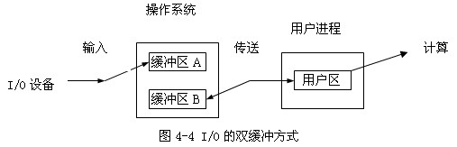

OS-final
OS-final
计算机系统概述
操作系统基本概念
操作系统特征
- 并发：两个或多个事件在同一时间间隔内发生
- 共享：系统中的资源可供内存中多个并发执行的进程共同使用
- 互斥共享
- 同时访问
- 虚拟：把一个物理上的实体变为若干个逻辑上的对应物
- 时分复用：虚拟处理器
- 空分复用：虚拟储存器
- 异步：进程以不可预知的速度向前推进
操作系统的目标和功能
- 为计算机系统资源的管理者
- 进程管理：进程控制、进程同步、进程通信、死锁处理、处理机调度…
- 储存器管理：内存分配回收、地址映射、内存保护与共享、内存扩充…
- 文件管理：文件存储空间的管理、目录管理、文件读写管理、文件保护与共享…
- 设备管理：缓冲管理、设备分配、设备处理…
- 为用户与计算机硬件系统之间的接口
- 命令接口：用户操作命令
- 程序接口：编程人员请求操作系统服务
- 实现了对计算机资源的扩充
操作系统的发展历程
-
手工操作
-
批处理系统
- 在批处理系统中，用户所提交的作业都先存放在外存上并排成一个队列，称为“后备队列”。然后，由作业调度程序按一定的算法从后备队列中选择若干个作业调入内存，使它们共享 CPU 和系统中的各种资源。
- 特点：
- 多道：在内存中同时存放多个作业，一个时刻只有一个作业运行，这些作业共享 CPU 和外部设备等资源。
- 成批：用户和作业之间没有交互性。用户自己不能干预自己的作业的运行，发现作业错误不能及时改正。
- 批处理系统的目的是提高系统吞吐量和资源的利用率（系统吞吐量是指系统在单位时间内所完成的总工作量。能提高系统吞吐量的主要原因是仅当作业完成时或运行不下去时才进行切换，系统开销小）。
-
分时操作系统
- 分时系统一般采用时间片轮转的方式，使每一台计算机为多个终端用户服务。分时系统与多道批处理系统之间有着截然不同的性能差别，它能很好地将一台计算机提供给多个用户同时使用，提高计算机的利用率。分时系统是指，在一台主机上连接了多个带有显示器和键盘的终端，同时允许多个用户通过自己的终端，以交互方式使用计算机，共享主机中的资源。（一个系统可以同时为两个或两个以上的账户服务）。
- 特点：
- 同时性：计算机系统能被多个用户同时使用；
- 独立性：用户和用户之间都是独立操作系统的，在同时操作时并不会发生冲突，破坏，混淆等现象；
- 及时性：系统能以最快的速度将结果显示给用户；
- 交互作用性：用户能和电脑进行人机对话。
-
实时操作系统
- 所谓“实时”，是表示“及时”，而实时系统是指系统能及时响应外部事件的请求，在规定的时间内完成对该事件的处理，并控制所有实时任务协调一致的运行。其应用需求主要在实时控制和实时信息处理
- 特点：
- 高精度计时系统：计时精度是影响实时性的一个重要因素。在实时应用系统中，经常需要精确确定实时地操作某个设备或执行某个任务，或精确的计算一个时间函数。这些不仅依赖于一些硬件提供的时钟精度，也依赖于实时操作系统实现的高精度计时功能。
- 多级中断机制：一个实时应用系统通常需要处理多种外部信息或事件，但处理的紧迫程度有轻重缓急之分。有的必须立即作出反应，有的则可以延后处理。因此，需要建立多级中断嵌套处理机制，以确保对紧迫程度较高的实时事件进行及时响应和处理。
- 实时调度机制：实时操作系统不仅要及时响应实时事件中断，同时也要及时调度运行实时任务。但是，处理机调度并不能随心所欲的进行，因为涉及到两个进程之间的切换，只能在确保“安全切换”的时间点上进行，实时调度机制包括两个方面，一是在调度策略和算法上保证优先调度实时任务；二是建立更多“安全切换”时间点，保证及时调度实时任务。
-
网络操作系统和分布式计算系统
-
个人计算机操作系统
操作系统运行环境
处理器运行模式
- 用户态：用户程序运行的模式，只能执行非特权指令
- 内核态：操作系统运行的模式
- 与硬件关联紧密的模块：时钟管理、中断处理、设备驱动
- 运行频率较高的程序：进程管理、储存器管理、设备管理
- 时钟管理：计时、进程切换
- 中断机制
- 原语：关闭中断，不可打断
中断和异常
系统调用
操作系统结构
- 分层法
- 模块化
- 宏内核
- 微内核
进程与线程
进程与线程
进程概念特征
- 描述和控制程序的并发执行
- PCB 是进程存在的唯一标志
- 进程是具有独立功能的程序在数据集合上的一次动态执行过程，是系统进行资源分配和调度的一个独立单位
- 动态性、并发性、独立性、异步性
进程的状态与转换
-
5 种进程状态
- 运行态：单处理机上，每时刻只有一个进程在运行态
- 就绪态：等待处理机，其他资源已就绪，排在就绪队列
- 阻塞态：进程请求某一资源的分配使用或等待某一事件发生，排在阻塞队列
- 创建态
- 创建进程：PCB，资源，就绪队列，创建未完成则在创建态
- 终止态
-
运行态 -> 阻塞态：主动行为，主动请求需要后等待；阻塞态 -> 就绪态：被动行为，其他进程释放资源等
进程的组成
-
PCB
- 进程描述信息：PID, UID
- 进程控制管理信息：进程状态，优先级
- 资源分配清单：使用内存地址空间情况、打开文件列表、使用 IO 设备
- 处理机上下文，进程切换时断点保存、恢复
-
程序段：可共享
-
数据段
进程控制
-
进程的创建
-
进程的终止
-
进程的阻塞唤醒
进程的通讯
-
PV 操作
-
共享存储
- 读写共享空间时，需要使用 PV
-
消息传递
- 使用发送消息、接收消息的原语，对用户透明
-
管道通信
- 一端写，一端读，是一个固定大小的缓冲区
- 满了阻塞 write，空了阻塞 read
线程概念特征
- 进程：更好执行多道程序的并发，提高资源利用率
- 线程：减少程序在并发时的时空开销，提高并发性能
- 线程是进程的基本执行单元，是 CPU 调度和分派的基本单位
- 一个进程可以有多个线程，不拥有系统资源，但可以访问进程下的共享的资源
- 和进程类似，也有三种基本状态和控制块
线程的实现方式
-
用户级线程
- 内核不察觉线程，调度仍以进程为单位
- 优点：线程切换不需要到内核空间，系统开销小，不同进程可有不同调度算法，与操作系统无关，属于用户程序
- 缺点：一个线程阻塞会阻塞全进程中线程，内核分配进程只有一个 cpu，一个进程中只能同时有一个线程执行
-
内核级线程
- 线程管理在内核中实现
- 优点：能发挥多处理机的优势，可同时调度一个进程中多个线程，一个线程阻塞不影响其他线程，内核支持线程有很小的数据结构和堆栈，切换快
- 缺点：线程切换需要转到内核态，系统开销大
-
组合方式
- 通过线程库管理线程
多线程模型
- 连接用户级线程和内核级线程的方式
- 多对一模型：线程管理在用户空间完成，效率高，但每次只有一个线程能访问内核，如阻塞则全阻塞
- 一对一模型：每次创建一个用户进程则需要创建一个内核进程，开销大
- 多对多模型
处理机调度
调度概念
-
进程数多余控制机数，竞争时分配算法调度
-
调度层次
- 高级调度：作业调度
- 中级调度：内存调度
- 低级调度：进程调度
调度评价标准
- CPU 利用率 = CPU 工作时间 /(工作时间 + 空闲等待时间)
- 系统吞吐量：单位时间 CPU 完成作业数量
- 等待时间：作业第一次执行时刻 - 到达时刻
- 响应时间：用户提交请求到系统首次相应所用时间
- 周转时间(Turnover Time) = 完成时刻 - 提交时刻
- 带权周转时间 = 周转时间 / 服务时间（执行时间）
调度实现
-
进程调度方式
- 非抢占式调度：发生调度条件，且当前进程进入阻塞态时才调度
- 抢占式调度：除了在中断处理或内核临界区中进行原子操作外，其他情况下若有调度请求，则根据一定原则暂停当前进程，去执行这个优先级更高的进程
-
线程调度方式
- 用户级线程调度：进程中的调度恒旭决定哪个线程运行
- 内核级线程调度：内核选择一个线程运行，不考虑属于哪个线程，切换时需要完整的上下文切换、修改内存映像、TLB 失效等，有延迟
调度算法
-
先来先服务 FCFS
- 简单但效率低，常被其他算法结合，对长作业有利，对短作业不利，不适合分时系统和实时系统的调度策略，利于 CPU 繁忙作业，不利于 IO 繁忙作业
-
短作业优先 SJF
- 对长作业不利，产生“饥饿现象”
- 未考虑作业紧迫程度
- 平均等待时间、平均周转时间最少
-
优先级调度
- 抢占式 / 非抢占式
- 优先级：静态 / 动态
-
高响应比优先
- 相应比 $R_p$ = (等待时间 + 服务时间)/ 服务时间
- 平衡了 FCFS 和 SJF 算法
-
时间片轮转法
- 适用分时系统
- 时间片大：退化为 FCFS
- 时间片小：切换频繁，处理机开销大
-
多级队列调度算法
- 可设置优先级、设置不同调度策略
-
多级反馈队列
- 综合多级调度队列与优先级调度
- n 级队列，级别越高优先级越低，时间片越长，每个队列中采用 FCFS
- 按队列优先级调度，优先级高的队列空了后，才可调度下一级队列，优先级高的队列可抢占优先级低的进程
同步和互斥
同步互斥概念
- 临界资源：一次只允许一个进程访问的资源，那段代码叫临界区
- 同步：直接制约关系，有数据传递合作关系，需要协调工作次序
- 互斥：间接制约关系，空闲让进，忙则等待，优先等待，让权等待
互斥实现方法
-
软件实现方法
-
Peterson 算法
1
2
3
4
5flag[i] = true; turn = j;
while(flag[j] && turn == j);
critical section;
flag[i] = false;
remainder section; -
Dekker 算法
-
-
硬件实现方法
- 中断屏蔽
- TestAndSet 指令
- Swap 指令
- CompareAndSwap 指令
互斥锁
- 互斥锁：一个 bool 变量，表示锁是否可用，如果可用则可获得，否则阻塞。
- 进入临界区时获得锁，退出时释放
信号量
- P, V 操作
- 可通过 semaphore 信号量和 PV 实现同步，互斥
管程
- 封装对共享资源的操作
- 每次仅允许一个进程进入管程
经典同步问题
生产者消费者问题
-
一组生产者进程，一组消费者进程共享一个 n 缓冲区
1
2
3
4
5
6
7
8
9
10
11
12
13
14
15
16
17
18
19
20
21
22
23
24semaphore mutex = 1;
semaphore empty = n;
semaphore full = 0;
procedure() {
while(true) {
produce an item in nextp; // 不涉及公共 buffer 临界区，可以不用锁
P(empty);
P(mutex);
add nextp to buffer;
V(mutex);
V(full);
}
}
consumer() {
while(true) {
P(full);
P(mutex);
remove an item from buffer;
V(mutex);
V(empty);
consume the item;
}
}
读者写者问题
-
一组读者进程，一组写者进程共享一个文件
-
读者优先
1
2
3
4
5
6
7
8
9
10
11
12
13
14
15
16
17
18
19
20
21
22
23
24
25int readcount = 0;
semaphore mutex_r = 1; // 保护 readcount
semaphore w = 1; // 保护文件
reader() {
while(true) {
P(mutex_r);
readcount++;
if(readcount == 1) P(w);
V(mutex_r);
read the data;
P(mutex_r);
readcount--;
if(readcount == 0) V(w);
V(mutex_r);
}
}
writer() {
while(true) {
P(w);
write the data;
V(w);
}
} -
写者优先
-
在读者优先的基础上增加信号量 queue，初值是 1：当至少有一个 写进程准备访问数据区时，用于禁止所有的读进程 。增加一个记数器，即整型变量 writecount，记录写者数，初值是 0。 writecount 为多个写者共享的变量，是临界资源。用互斥信号量 mutex_w 控制, mutex_w 初值是 1。reader 不能建造长队列，否则写进程将不能跳过这个队列，因此，只允许一个读进程排队，而所有其他读进程在等待 r 之前，在信号量 mutex_r_wait 上排队。
1
2
3
4
5
6
7
8
9
10
11
12
13
14
15
16
17
18
19
20
21
22
23
24
25
26
27
28
29
30
31
32
33
34int writecount = 0, readcount = 0;
semaphore mutex_r = 1, mutex_w = 1, queue = 1, mutex_f = 1;
reader() {
while(true) {
P(queue);
P(mutex_r);
readcount++;
if(readcount == 1) P(mutex_f);
V(mutex_r);
V(queue);
read the data;
P(mutex_r);
readcount--;
if(readcount == 0) V(mutex_f);
V(mutex_r);
}
}
writer() {
while(true) {
P(mutex_w);
writecount++;
if(writecount == 1) P(queue);
V(mutex_w);
P(mutex_f);
write the data;
V(mutex_f);
P(mutex_w);
writecount--;
if(writecount == 0) V(queue);
V(mutex_w);
}
} -
读写公平
-
正在读时，如果有写请求，则禁止后续读请求，写完再读，各增加一个 PV 操作即可
1
2
3
4
5
6
7
8
9
10
11
12
13
14
15
16
17
18
19
20
21
22
23
24
25
26
27
28int readcount = 0;
semaphore mutex_r = 1; // 保护 readcount
semaphore w = 1; // 保护文件
semaphore is_w = 1; // 是否有写进程, 写优先
reader() {
P(is_w); // 判断有无写请求，有则不能读
P(mutex_r);
readcount++;
if(readcount == 1) P(w);
V(mutex_r);
V(is_w);
read the data;
P(mutex_r);
readcount--;
if(readcount == 0) V(w);
V(mutex_r);
}
writer() {
while(true) {
P(is_w); // 发出写进程请求，排队等
P(w);
write the data;
V(w);
V(is_w);
}
}
哲学家进餐问题
-
一张圆桌，五个哲学家，五个筷子，每个哲学家需要左右两个筷子才能进餐
1
2
3
4
5
6
7
8
9
10
11
12
13
14
15
16
17
18
19
20
21
22
23
24
25
26
27
28
29
30
31
32
33
34
35
36
37
38
39
40
41
42
43
44
45
46
47
48
49
50
51
52
53
54
55
56
57
58semaphore chopstick[5] = {1, 1, 1, 1, 1};
semaphore count = 4;
Pi() {
while(true) {
P(count); //mutex 的 PV 保证每个哲学家只有左右两个筷子都可用时才吃
P(chopstick[i]);
P(chopstick[(i+1)%5]);
eat();
V(chopstick[i]);
V(chopstick[(i+1)%5]);
V(count);
think();
}
}
#### 吸烟者问题
- 三个吸烟者，一个代理商，三种材料，每个吸烟者需要两种材料才能吸烟，代理商提供材料
```c
int offer = 0;
semaphore agent = 1;
semaphore tobacco = 0, paper = 0, match = 0;
agent() {
while(true) {
P(agent);
if(offer == 1) V(tobacco);
else if(offer == 2) V(paper);
else if(offer == 3) V(match);
}
}
smoker_tobacco() {
while(true) {
P(tobacco);
smoke();
V(agent);
}
}
smoker_paper() {
while(true) {
P(paper);
smoke();
V(agent);
}
}
smoker_match() {
while(true) {
P(match);
smoke();
V(agent);
}
}
寿司店问题
-
假设一个寿司店有 5 个座位，如果你到达的时候有一个空座位，你可以立刻就坐。但是如果你到达的时候 5 个座位都是满的有人已经就坐，这就意味着这些人都是一起来吃饭的，那么你需要等待所有的人一起离开才能就坐。
1
2
3
4
5
6
7
8
9
10
11
12
13
14
15
16
17
18
19
20
21
22
23
24
25
26
27
28
29
30
31
32
33int eating = waiting = 0;
Semaphore mutex = 1;
Semaphore block = 0;
bool must_wait = False;
customer() {
while(true) {
P(mutex);
if(must_wait == True) {
waiting++;
V(mutex);
P(block);
}
else {
eating++;
must_wait = (eating == 5);
V(mutex);
}
eat();
P(mutex);
eating--;
if(eating == 0) {
n = min(5, waiting);
waiting -= n;
eating += n;
must_wait = (eating == 5);
for(int i=0;i<n;i++) {
V(block);
}
}
V(mutex);
}
}
死锁
死锁的原因
- 多个进程对不可剥夺资源的竞争
- 进程推进顺序非法，都在等待对方的消息等
死锁的必要条件
- 互斥条件：一个资源一段时间内只能被一个进程使用
- 不剥夺条件：进程已获得的资源在未使用完之前不能被剥夺
- 请求并保持条件：进程保持着至少一个资源，同时又在请求新的资源
- 循环等待条件：存在一种进程资源的循环等待链，链中每个进程已获得的资源同时被链中下一个进程所请求
死锁的处理策略
-
死锁预防
- 破坏互斥条件：允许多个进程同时访问资源，很多情况不可行
- 破坏不剥夺条件：进程保持某些不可剥夺资源，请求新的资源但得不到满足时，必须释放已占有的资源（被剥夺），待以后需要时再重新申请，策略复杂，影响系统性能
- 破坏请求并保持条件：进程在申请资源时，一次性申请所有需要的资源，如不可满足则不运行，可能导致资源浪费和“饥饿”现象
- 破坏循环等待条件：对所有资源进行线性编号，进程只能按编号顺序申请资源，但会限制新设备增加，会导致资源浪费
-
死锁避免
- 系统安全状态：先计算分配安全性，不安全则不分配。安全性指可以以某种顺序分配资源，使得每个进程都能完成，不会发生死锁
- 银行家算法：
- Max 矩阵：最大需求矩阵 Allocation 矩阵：已分配资源矩阵，相减得到 Need 矩阵。
- 有进程申请资源，先看是否小于其 Need 向量，再看是否小于 Available 向量，最后在进行安全状态判断：每一行和 Available 向量比较，如果有比 Available 向量小的行，则加入安全序列，相应改变这些矩阵和向量的值，直到所有进程都加入安全序列，否则不安全。
-
死锁的检测和解除
- 死锁检测：资源分配图中，删去入度大于出度节点的所有请求边和分配边，如果最后所有边都删了，则称图可完全简化，不会死锁。
- 死锁定理：该状态的资源分配图不可完全简化
- 死锁解除
- 资源剥夺法
- 撤销进程法
- 进程回退法
内存管理
内存管理概念
- 主要功能
- 内存分配和回收
- 地址转换
- 内存空间的扩充：虚拟内存技术或自动覆盖技术
- 内存共享
- 储存保护
程序的连接和装入
- 编译
- 链接
- 静态链接
- 装入时动态链接
- 运行时动态链接
- 装入
- 绝对装入
- 可重定位装入
- 动态运行时装入
逻辑地址与物理地址
- 逻辑地址空间：编译后，模块从 0 号开始编址，顺序编址构成逻辑地址空间，32 位系统下，为 0~2^32-1，进程运行时使用都是逻辑地址，用户和程序员只需知道逻辑地址，内存管理机制对其透明（不可见）
- 物理地址空间：内存中物理单元的集合，是地址转换的最终地址，进程访问数据最终都要在主存的物理地址中存取
- 地址重定位：当装入程序将可执行代码装入内存是，必须通过 MMU 进行地址转换将逻辑地址转换为物理地址
- 逻辑地址通过页表映射到物理内存
进程的内存映像
-
代码段：代码段在内存中被映射为只读。它是由编译器在编译链接时自动计算的。通常是用来存放程序执行的指令。代码段输入静态内存分配。
-
数据段：通常用来存放程序中已初始化的（非 0）全局变量和静态局部变量。数据段的起始位置由链接定位文件确认，大小在编译链接时自动分配。数据段属于静态内存分配
-
BSS 段：bss 是英文 Block by Symbol 的简称。通常用来存放程序中未初始化和初始化为 0 的全局变量的一块内存区域，在程序载入时由内核清零。数据段属于静态内存分配
-
堆
- 堆保存函数内部动态分配（malloc 或 new）的内存，是另外一种用来保存程序信息的数据结构。
- 堆是先进先出（FIFO）数据结构。堆的地址空间是向上增加，即当堆上保存的数据越多，堆的地址越高。动态内存分配
- 注意：堆内存需要程序员手动管理内存，通常适用于较大的内存分配，如频繁的分配较小的内存，容易导致内存碎片化。
-
栈
- 栈保存函数的局部变量（不包括 static 修饰的变量），参数以及返回值。是一种后进先出（LIFO）的数据结构。
- 在调用函数或过程后，系统会清除栈上保存的局部变量、函数调用信息及其他信息。
- 栈的另外一个重要特征是，它的地址空间 向下减少，即当栈上保存的数据越多，栈的地址越低。静态内存分配
内存保护
- 每个进程够一个单独的内存空间，操作系统不受用户程序的影响，用户进程不受其他用户进程的影响
- 保护方式
- CPU 设置上下限寄存器，访问时进行上下限地址判断
- 界限寄存器判断逻辑地址是否超过最大值，重定位寄存器存放物理基地址，加上之后得到物理地址
内存共享
- 多个进程的某些页表项都指向共享区的物理页号
- 可重入代码，又称纯代码，只读，多个进程可访问
内存分配与回收
- 连续分配：单一连续分配 -> 固定分区分配 -> 动态分区分配
- 离散分配：页式储存管理
连续分配管理方式
- 单一连续分配：用户区只有一个进程，不会出现内存碎片，但是资源利用率低，
- 固定分区分配：用户内存空间分成若干固定大小的区域，每个分区装一个作业，分区数量固定，分区大小可不同可相同，会出现内碎片
- 分区大小相同：会浪费 / 装不下，缺乏灵活性
- 分区大小不同
- 单一队列的分配方式
- 多队列分配方式
动态分区分配
- 进程装入内存时，根据进程的实际需要动态分配内存，并使分区大小正好适合进程，分区大小数量不固定，会出现外碎片，可以通过紧凑技术解决
- 进程装入算法
- 首次适应算法：从前往后找到第一个满足要求的分区
- 临近适应算法：从上次找到的分区开始找到第一个满足要求的分区
- 最佳适应算法：空间分区按递增顺序形成空闲分区链，找第一个，即找到最小可满足的分区
- 最坏适应算法：空间分区按递减顺序形成空闲分区链，找第一个，即找到最大可满足的分区
- 快速适应算法：又称为分类搜索法，把空闲分区按容量大小进行分类，经常用到长度的空闲区设立单独的空闲区链表。系统为多个空闲链表设立一张管理索引表。
- 伙伴系统
闲置空间的管理
- 位图表示法（分区表）
- 链表表示法（分区链表）
分页储存管理
-
把用户进程的地址空间分成若干固定大小的区域，称为页，内存空间分成若干相同大小的区域，称为页框
-
类似于固定分区分配，但分块大小小，内部碎片小
- 分块大小小：内碎片小, 但需要更大的页表
- 分块大小大：内碎片大
- 分页开销：假定进程平均占用 s 个字节，页面大小是 p 个字节，一个页表项约占 e 字节，分页的开销为：se/p+p/2
- 一页大小 4K，32 位地址结构前 20 位为页号，后 12 位为页内偏移量，所以总共可有 2^20 个页，虚拟地址空间最大为 4G
-
创建页表，将虚拟内存中的页映射到物理内存中的页框，页号 -> 页框号，页内偏移相等
- 页表存放在内存中，属于进程的现场信息。
- 访问一个数据需访问内存 2 次 (页表一次，内存一次)
二级页表
- 若只有一级页表 ，因为逻辑地址空间很大，则划分的页比较多，页表就很大，占用的存储空间大，2^20 页，所以页表项由 20 位页框号和 12 位标志位组成，占用 4 个字节。每个进程仅仅页表就要占用 4*2^20 KB = 4 MB 的内存空间
- 使用二级页表：顶级页表只有一个，包含 4KB/4K = 1K 个页表项，每个页表项指向到一个二级页表，每个页表中有 1K 个页表项，共 1M 个页表项指向物理内存中页框，地址结构 10 10 12
- 因为可以只将当前所需的装入内存，其余部分根据需要再陆续调入，可以节省内存空间
- 内存访问效率的严重下降，由不分页时的 1 次，上升到了 3 次
- 逻辑地址取前 10 位为一级页表中页表项号（实际地址要 *4K)，在一级页表中找，得到二级页表对应页框号，乘以页面大小 4K 得到二级页表起始地址，一次访问
- 逻辑地址取中间 10 位为二级页表中页表项号，在二级页表中找，得到存放对应数据的物理页框号，一次访问
- 逻辑地址取最后 12 位为页内偏移，加上物理页框号乘以页面大小得到的物理地址，一次访问
快表
-
为了提高地址转换效率，CPU 内部增加了一个硬件单元，称为存储管理单元 MMU，包含
- 页表 Cache，又称为 TLB，存放虚拟地址与相应的物理地址
- TLB 控制单元：TLB 内容填充、刷新、覆盖，以及越界检查
- 页表查找单元：若 TLB 未命中，自动查找多级页表，将找到的物理地址送与 TLB 控制单元
-
当 CPU 产生逻辑地址后，其页号提交给 TLB。如果页码不在 TLB 中（称为 TLB 失效），那么就需要访问页表。将页号和帧号增加到 TLB 中。
-
如果 TLB 中的条目已满，那么操作系统会使用一定策略选择一个来替换。有的 TLB 允许有些条目固定下来。通常内核代码的条目是固定下来的。
其他种类页表
- 哈希页表
- 反置页表：依据该进程在内存中的物理页面号来组织，用进程标志符和页号去检索反置页表
页共享与保护
- 页共享：进程把需要共享的数据 / 程序的相应页指向相同物理块
- 页保护：地址越界保护，在页表中设置保护位
分段存储管理
- 将进程中自然段划分逻辑空间，段内地址连续，段间地址不连续，地址空间是二维的。如主程序段，子程序段，栈段，数据段，逻辑地址由段号和段内偏移构。
- 每个进程需要一个段表实现逻辑空间到内存空间的映射，记录该段在内存中的起始地址和长度。
特点
- 信息保护：页式管理中，一个页面中可能装有 2 个不同的子程序段的指令代码，不能通过页面共享实现共享一个逻辑上完整的子程序或数据块。段式管理中，可以以信息的逻辑单位进行保护。
- 动态增长：实际应用中，某些段（数据段）会不断增长
- 动态链接：动态链接在程序运行时才把主程序和要用到的目标程序（程序段）链接起来
段页式储存管理
- 用分段方法来分配和管理虚拟存储器，而用分页方法来分配和管理实存储器
- 先将用户程序分成若干个段（段式） ，并为每一个段赋一个段名，再把每个段分成若干个页（页式）
- 地址结构由段号、段内页号、及页内位移三部分所组成。
- 每个进程一张段表，每个段一张页表，段表含段号、页表始址和页表长度。页表含页号和块号
虚拟存储
- 为每个进程提供了一个大的、一致的、连续的可用的和私有的地址空间
- 像覆盖技术那样，不是把程序的所有内容都放在内存中，因而能够运行比当前的空闲内存空间还要大的程序
- 像交换技术那样，能够实现进程在内存与外存之间的交换，因而获得更多的空闲内存空间
- 技术特征：离散性，多次性，对换性，虚拟性
虚拟存储的基本原理
- 按需装载：在程序装入时，不必将其全部读入到内存，而只需将当前需要执行的部分页或段读入到内存，就可让程序开始执行。
- 缺页调入：在程序执行过程中，如果需执行的指令或访问的数据尚未在内存（称为缺页或缺段），则由处理器通知操作系统将相应的页或段调入到内存，然后继续执行程序。
- 不用调出：另一方面，操作系统将内存中暂时不使用的页或段调出保存在外存上，从而腾出空间存放将要装入的程序以及将要调入的页或段――具有请求调入和置换功能，只需程序的一部分在内存就可执行，对于动态链接库也可以请求调入
缺页错误处理机制
- 进程执行过程中需访问的页面不在物理存储器中时，会引发发生缺页中断，步骤如下
- 现场保护：陷入内核态，保存必要的信息
- 页面定位：查找出来发生页面中断的虚拟页面
- 权限检查：检查虚拟地址的有效性及安全保护位
- 新页面调入（1）：查找一个空闲的物理页框或通过页面置换算法找到一个需要换出的页框
- 旧页面写回：如果找的页框中的内容被修改了，则需要将修改的内容保存到磁盘上
- 新页面调入（2）：页框“干净”后，操作系统将保存在磁盘上的页面内容复制到该页框中
- 更新页表：更新内存中的页表项，将虚拟页面映射的页框号更新为写入的页框，并将页框标记为正常状态
- 恢复现场，继续执行
页面置换策略
- 最佳策略（optimal page-replacement）：从主存中移出永远不再需要的页面，如无这样的页面存在，则应选择最长时间不需要访问的页面。理想情况，无法被实现。
- 先进先出算法（First-in, First-out）：选择作业中在主存驻留时间最长的一页淘汰。
- 性能较差。较早调入的页往往是经常被访问的页，这些页在 FIFO 算法下被反复调入和调出。并且有 Belady 现象: 分配的页面增多，但缺页率反而提高。
- 改进 FIFO 算法：Second Chance，每个页面会增加一个访问标志位，用于标识此数据放入缓存队列后是否被再
次访问过。如果即将要淘汰的页面如果后没有被访问过，则将 A 移到 FIFO 队列头，并设为已访问，如果访问过，则立即淘汰。如果所有的页面都被访问过，则经过一次循环后就会按照 FIFO 的原则淘汰。 - 改进 Second Chance 算法：Clock，通过一个环形队列，避免将数据在 FIFO 队列中移动。
- 最近最久不用的页面置换算法（Least Recently Used Replacement）：选择在最近一段时间内最久不用的页面予以淘汰。局部性原理的合理近似，性能接近最优算法
抖动问题
-
随着驻留内存的进程数目增加，或者说进程并发水平 (multiprogramming level) 的上升，处理器利用率先是上升，然后下降
-
原因通常称为虚拟存储器发生“抖动”，也就是：每个进程的常驻集不断减小，缺页率不断上升，频繁调页使得调页开销增大
-
预防与消除
- 局部置换策略
- 引入工作集算法
- 预留部分页面
- 挂起若干进程
改善时间性能的途径
- 降低缺页率：缺页率越低，虚拟存储器的平均访问时间延长得越小
- 提高外存的访问速度：外存和内存的访问时间比值越大，则达到同样的时间延长比例，所要求的缺页率就越低
- 高速缓存命中率
虚拟内存其他用途
- 写时拷贝（Copy-on-Write）：两个进程共享同一块物理内存，每个页面都被标志成了写时复制。共享的物理内存中每个页面都是只读的。只有在需要写入的时候，数据才会复制，从而使各个进程都拥有各自的拷贝。也就是说，资源的复制只有在需要写入的时候才进行
- 内存映射文件（Memory-Mapped Files）：将 IO 变成访存，简化读写操作，允许共享
- 将一个文件（或部分）映射到其虚拟地址空间的一部分，访问这个文件就像访问内存中的一个大数组，而不是对文件进行读写，方便让多个进程共享一个文件
- 通常，在映射共享的页面时不会实际读入页面的内容，而是在访问页面时，页面才会被每次一页的读入，磁盘文件则被当作后备存储，当进程退出或显式地解除文件映射时，所有被修改页面会写回文件
页目录自映射
- 存储页表的 4MB 地址空间中是整个 4GB 虚拟地址空间中的一部分，OS 设计者可规定其所在位置，4MB 对齐
- 4MB 的二级页目录映射 1024 个页表项到 4GB 空间，同时这个 4MB 也是 1024 个页表项中的一项，其被 4MB 的二级页目录中的一个页表项映射，称为自映射目录表项
- 地址构造
- 页表基址 PTbase =（（ PTbase）>> 22）<< 22，4MB 对齐
- 页目录表基址 PDbase = PTbase |(PTbase)>>10
- 自映射目录表项 PDEself-mapping = PTbase |(PTbase)>>10| (PTbase)>>20
输入输出系统
I/O 设备分类
- 类型
- 传输速度：低速、中速、高速
- 信息交换单位：块设备和字符设备
- 共享属性：独占设备、共享设备、虚拟设备
- 设备与控制器之间的接口
- 数据信号
- 控制信号
- 状态信号
设备的管理的目标和功能
- 设备管理目标
- 提高效率：提高 I/O 访问效率，匹配 CPU 和多种不同处理速度的外设
- 方便使用：方便用户使用，对不同类型的设备统一使用方法，协调对设备的并发使用
- 方便控制：方便 OS 内部对设备的控制。例如：增加和删除设备，适应新的设备类型
- 外设管理功能
- 提供设备使用的用户接口：命令接口和编程接口。
- 设备分配和释放：使用设备前，需要分配设备和相应的通道、控制器。
- 设备的访问和控制：包括并发访问和差错处理。
- I/O 缓冲和调度：目标是提高 I/O 访问效率
I/O 控制方式
-
程序控制 I/O，也称轮询或查询方式 I/O，它由 CPU 代表进程向 I/O 模块发出指令， 然后进入忙等状态，直到操作完成之后进程才能够继续执行。
-
中断驱动， 当 I/O 操作结束后由设备控制器主动地来通知设备驱动程序说这次结束，而不是设备驱动程序不断地去轮询看看设备的状态。
-
DMA，直接存储器访问方式， 是由一个专门的控制器来完成数据从内存到设备或者是从设备到内存的传输工作。在 要求传送的一批数据 完成之后中断 CPU（程序中断方式具有对异常事件的处理能力，而 DMA 控制方式适用于数据块的传输）
-
通道，与 DMA 的原理几乎是一样的，通道是一个特殊功能的处理器，它有自己的指令和程序专门负责数据输入输出的传输控制。CPU 将“传输控制”的 功能下放 给通道后只负责“数据处理”功能。这样，通道与 CPU 分时使用内存，实现了 CPU 内部运算与 I/O 设备的并行工作。DMA 控制器通常只能控制一台或者少数几台同类设备；而一个通道可同时控制多种设备
缓冲技术
-
提高外设利用率
- 匹配 CPU 与外设的不同处理速度
- 减少对 CPU 的中断次数
- 提高 CPU 和 I/O 设备之间的并行性
-
单缓冲：一个缓冲区，CPU 和外设轮流使用，一方处理完之后接着等待对方处理
-
双缓冲：两个缓冲区，CPU 和外设都可以连续处理而无需等待对方。要求 CPU 和外设的速度相近
 -
环形缓冲：多个缓冲区，CPU 和外设的处理速度可以相差较大。可参见“生产者－消费者”问题
-
缓冲池：三个缓冲区队列组成：空闲缓冲区，输入缓冲区，输出缓冲区
磁盘存储管理
- 扇区（sector）：盘片被分成许多扇形的区域
- 磁道（track）：盘片上以盘片中心为圆心，不同半径的同心圆。
- 柱面（cylinder)：硬盘中，不同盘片相同半径的磁道所组成的圆柱。
- 每个磁盘有两个面，每个面都有一个磁头(head)
磁盘访问时间
- 访问时间 Ta = Ts + Tr + Tt
- 寻道时间 Ts = m × n + s：为启动磁盘的时间 s 与磁头移动 n 条磁道所花费的时间之和
- 旋转延迟时间 Tr = 1/(2r)，r 为旋转速度
- 传输时间 Tt = b/(rN)，为把数据从磁盘读出，或向磁盘写入数据所经历的时间，与每次所读／写的字节数 b，旋转速度 r 以及磁道上的字节数 N 有关
磁盘调度算法
-
对于 OS 的磁盘 IO 驱动，可能收到 IO 请求的速度大于磁盘实际能够执行的速度，需要调度算法
-
先来先服务算法（FCFS）
- 效率不高，相邻两次请求可能会造成最内到最外的柱面寻道，使磁头反复移动，增加了服务时间，对机械也不利。
-
最短寻道时间优先算法（SSTF）
- 优先选择距当前磁头最近的访问请求进行服务，主要考虑寻道优先。可能产生“饥饿” 现象，造成某些访问请求长期等待得不到服务
-
扫描算法（SCAN）电梯调度
- 按一个方向移动，在移动过程中对遇到的访问请求进行服务，然后判断该方向上是否还有访问请求，如果有则继续扫描；否则改变移动方向，两侧磁道被访问的频率低于中间磁道。
- 按一个方向移动，在移动过程中对遇到的访问请求进行服务，然后判断该方向上是否还有访问请求，如果有则继续扫描；否则改变移动方向，两侧磁道被访问的频率低于中间磁道。
-
循环扫描算法（CSCAN）
- 移动臂到达最后一个柱面后，立即带动读写磁头快速返回到 0 号柱面，返回时不为任何的等待访问者服务
-
Scan 和 C-Scan 的问题
- 磁头总是扫描到最里 / 最外磁道才返回
- 改进：Scan=>Look，C-Scan=>C-Look
磁盘的可靠性
RAID
-
RAID：一种把多块独立的硬盘（物理硬盘）按照不同方式组合起来形成一个硬盘组（逻辑硬盘），从而提供比单个硬盘更高的存储性能和提供数据冗余的技术。
-
成本低，功耗小，传输速率高，可提供容错功能
-
数据分段：把一个文件的数据分成多个条带（striping）写到多个硬盘，每个条带的大小可以按需调整
-
RAID0（40+40=80）：提供了并行交叉存取，虽然有效提高了磁盘 I/O 速度，但并无冗余校验功能。
-
RAID1（40+40=40）：将每一数据块重复存入镜像磁盘，以改善磁盘机的可靠性，有效容量下降了一半，成本较高
-
RAID 0+1：先让磁盘组内的成员组成 RAID 0 条带化，然后磁盘组之间为 RAID 1 镜像关系
- 损坏一块磁盘之后，所在的 RAID 0 组即认为损坏，RAID 0+1 实际上已经退化为仅有一个 RAID 0 的结构，此时，上面那组 RAID 0 随便坏一块，整个 RAID 就崩溃了，概率 n/(2n-2)
-
RAID 1+0：先让磁盘组内的成员组成 RAID 1 互为镜像，然后磁盘组之间 RAID 0 条带化
- 只要同一个 RAID 1 组内硬盘不全不损坏，整个 RAID 就不会有问题，概率 1/(n-1)

-
RAID2：采用海明码纠错的磁盘阵列，将数据位交叉写入几个磁盘中。按位条带化，冗余磁盘数量与数据磁盘数量的对数成正比
-
RAID3：阵列中只有一个校验盘，一般采用奇偶校验
-
RAID4：冗余代价与 RAID3 相同，访问数据的方法与 RAID3 不同
-
RAID5：采用数据块交叉和分布的冗余校验，将数据和校验都分布在各个磁盘中，没有专门的奇偶校验驱动器
- RAID6：双维校验独立存取盘阵列，数据以块（块大小可变）交叉方式存于各盘，检、纠错信息均匀分布在所有磁盘上
- 写入数据要访问 1 个数据盘和 2 个冗余盘，可容忍双盘出错，存储开销是 RAID5 的两倍
校验码
- 奇偶校验
- 偶校验：P =a0⊕a1⊕a2⊕…⊕an-1
- 奇校验：P =not (a0⊕a1⊕a2⊕…⊕an-1)
- 海明码：多重 (复式) 奇偶检错系统，将信息用逻辑形式编码，4 位数据为例，需要 3 个校验位
- XOR 数据恢复：四个式子循环对称，少一个可以用另外三个求
- a = b XOR c XOR d
- b = a XOR c XOR d
- c = a XOR b XOR d
- d = a XOR b XOR c
文件系统
- 大量储存，长期保存，数据共享
- 把数据组织成文件的形式，用文件作为数据的存储和访问单位
- 一组带标识（标识即为文件名）的、在逻辑上有完整意义的信息项的序列，一个 单独的连续的逻辑地址 空间
- 所有的 I/O 设备，包括磁盘、键盘、鼠标、显示器都可以看成是文件
文件管理的需求
- 用户视角（使用逻辑文件）
- 用户关心文件中要使用的数据，不关心具体的存放形式（和位置）。
- 关心的是文件系统所提供的对外的用户接口，包括文件如何命名、如何保护、如何访问（创建、打开、关闭、读、写等）；
- 操作系统视角（组织和管理物理文件）
- 文件的描述和分类，关心的是如何来实现与文件有关的各个功能模块，包括如何来管理存储空间、文件系统的布局、文件的存储位置、磁盘实际运作方式（与设备管理的接口）等。
文件目录分类
- 单级文件目录
- 二级文件目录
- 多级文件目录
单级文件目录
-
文件目录的每个表目应包含：
- 文件的符号名
- 文件所在物理地址
- 文件结构信息
- 存取控制信息
- 管理信息
-
文件多时，目录检索时间长；
-
有命名冲突：如多个文件有相同的文件名（不同用户的相同作用的文件）或一个文件有多个不同的文件名（不同用户对同一文件的命名）；
-
不便于实现共享
二级文件目录
- 在根目录（第一级目录）下，每个用户对应一个目录（第二级目录），在用户目录下是该用户的文件，而不再有下级目录。适用于多用户系统，各用户可有自己的专用目录。
多级文件目录（层次目录）
- 文件树，层次清楚，可解决文件重名问题，查找速度快但目录级别太多时，会增加路径检索时间

文件数据组织
文件控制块（FCB）
- 基本信息
- 文件名：字符串，通常在不同系统中允许不同的最大长度。可以修改。
- 物理位置
- 文件逻辑结构：有 / 无结构（记录文件，流式文件）
- 文件物理结构：（如顺序，索引等）
- 访问控制信息
- 文件所有者（属主）：通常是创建文件的用户，或者改变已有文件的属主；
- 访问权限（控制各用户可使用的访问方式）：如读、写、执行、删除等；
- 使用信息
- 创建时间，上一次修改时间，当前使用信息等。
文件物理结构：文件在存储介质上的存放方式，表示了一个文件在文件存储介质上的位置、链接和编目的方法。
-
连续（顺序）结构：名字，长度，起始地址
- 不利于文件的动态增加和修改，适用于变化不大的顺序访问的文件
-
串联 / 链接结构：每个物理块的最末一个字 (或第一个字) 作为链接字，它指出后继块的物理地址。链首指针存放在该文件目录中。文件的结尾块的指针为“∧”
- 文件动态扩充和修改容易，但如果访问文件的最后的内容，实际上是要访问整个文件。
- 文件动态扩充和修改容易，但如果访问文件的最后的内容，实际上是要访问整个文件。
-
索引结构
- 一个文件的信息存放在若干个不连续物理块中，系统为每个文件建立一个专用数据结构：索引表，并将这些物理块的块号存放在该索引中，索引表就是磁盘块地址数组，FCB 中记录索引表的地址